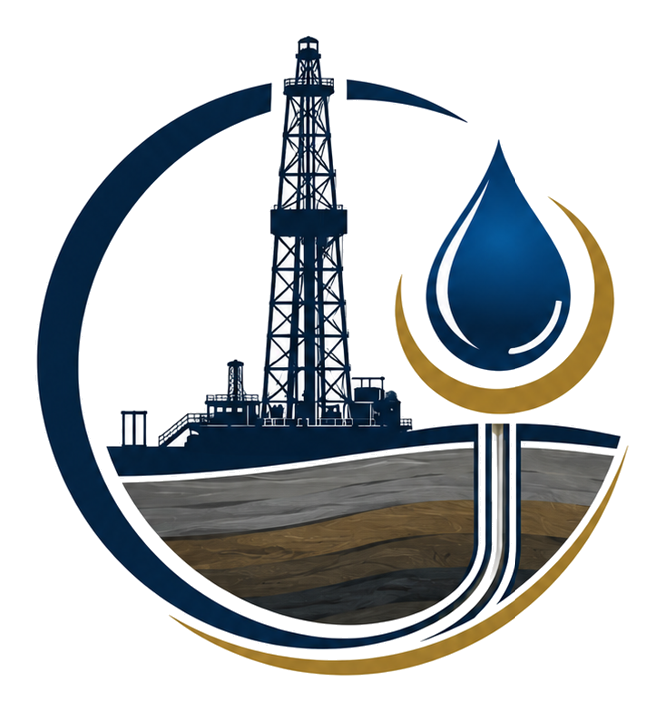

Drilling Fluids Engineering & Optimization
Mud program review, fluid property control, density, rheology, filtration, chemical treatments, field testing and performance improvement.

Carlos TiradoDrilling Fluids • MWD • Field EngineeringOil & Gas Professional • Edmonton, Alberta
Carlos Tirado brings 20+ years of practical oilfield experience across Canada, Argentina and Colombia, supporting drilling fluids, mud systems, MWD operations, real-time field data, solids control, laboratory work and upstream project execution.
What the company does today
Drilling Fluids & Well Engineering Consulting Inc. is positioned to support operators, service companies and project teams with practical field experience, technical discipline and execution-focused oilfield support.
The work combines drilling fluids engineering, mud system control, MWD field operations, data acquisition, real-time decisions, laboratory testing, solids control and project support from planning through post-job review.
Drilling fluids, field service engineering, drilling engineering, MWD operations, mud systems, solids control, project execution and technical troubleshooting.
Available for field assignments, remote support, technical reviews, project coordination and consulting work in Canada and international markets.
Technical Services
Mud program review, fluid property control, density, rheology, filtration, chemical treatments, field testing and performance improvement.
Directional and horizontal drilling support, real-time survey operations, data acquisition, monitoring and field decision support.
Support for instability risks, hole cleaning issues, losses, stuck pipe tendencies, swelling formations and corrective action planning.
Shakers, centrifuge strategy, mud plant separation, dilution control, waste reduction, fluid management and field reporting.
Hands-on site support, daily operations coordination, contractor interface, safety discipline, reporting and issue resolution.
Field and laboratory testing mindset developed through drilling fluids, inspection, certification and quality-focused work environments.
Planning, job execution, post-job analysis, feasibility review, operational performance and cost-focused recommendations.
Trend analysis, field data review, performance monitoring, drilling indicators, NPT drivers and operational improvement opportunities.
Practical support for crews and junior technical staff in mud properties, reporting, field testing, HSE discipline and operational standards.
Practical consulting connecting fluids, MWD, drilling engineering, HSE, logistics, cost control and execution strategy.
Real field context


How the work is delivered
Well objectives, drilling plan, formation risks, offset information, fluid history, operational constraints and expected field conditions.
Fluid strategy, MWD support needs, testing requirements, solids control setup, safety expectations and reporting workflow.
Field support, mud checks, real-time survey/data support, contractor coordination, troubleshooting and daily operational discipline.
Data analysis, lessons learned, cost and performance review, NPT prevention and recommendations for future wells or projects.
Education • Certifications • Recognition
Carlos combines academic petroleum engineering training with field-based oilfield execution, Halliburton Mud School training, MWD operations experience and HSE recognition.
Safety • Technical discipline • Compliance
The website positions Carlos as a senior technical professional who understands that drilling fluids and field operations must support safety, environmental control, documentation, traceability and consistent testing.
International background
More than two decades supporting conventional and unconventional oil and gas operations, from Colombian drilling fluids and field service work to Argentina shale gas projects and Canadian upstream, midstream and infrastructure assignments.
Available for projects
Contact Carlos directly by phone, SMS, WhatsApp or LinkedIn. The inquiry form below opens WhatsApp with the project details ready to send.
Direct phone, SMS, WhatsApp and LinkedIn contact available.